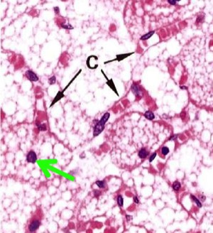
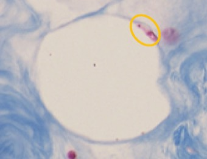
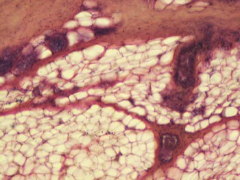

Andere bindweefselcellen:
c. Vetcellen (adipocyten)
Er bestaan 2 types van vetcellen: witte vetcellen en bruine vetcellen.
Bruine vetcellen bevatten vele kleine vetdruppeltjes in hun cytoplasma. De kern is niet afgeplat. Ze komen bijna alleen voor bij pasgeborenen en dieren met winterslaap en spelen een bijzondere rol in de thermoregulatie.
c. Vetcellen (adipocyten)
Er bestaan 2 types van vetcellen: witte vetcellen en bruine vetcellen.
Bruine vetcellen bevatten vele kleine vetdruppeltjes in hun cytoplasma. De kern is niet afgeplat. Ze komen bijna alleen voor bij pasgeborenen en dieren met winterslaap en spelen een bijzondere rol in de thermoregulatie.

Een groepje van bruine vetcellen. In 1 cel zie je verschillende kleine vetvacuolen. De kern (groene pijl) vind je centraal in de cel. In dit weefsel zie je veel capillairen (C).
Witte vetcellen komen het talrijkst voor. Het zijn zeer grote cellen. Ze bevatten één grote, centraal gelegen vetvacuole, ontstaan door samensmelting van vetdruppels. Hierdoor worden het cytoplasma en de kern naar perifeer verdrongen (wandstandig cytoplasma en kern) en is de kern afgeplat. Witte vetcellen kunnen afzonderlijk voorkomen of gegroepeerd in vetweefsel. Dit is bijvoorbeeld het geval in de hypodermis van de huid. Witte vetcellen zijn meestal duidelijk afgelijnd. Ze lijken ‘leeg’ omdat de vetinhoud weggewassen is door de preparatietechnieken. De voornaamste functies van witte vetcellen zijn het opslaan van lipiden, schokdemping en isolatie. In de buurt van vetcellen vinden we meestal bloedvaatjes.

Een witte vetcel. Door preparatie van de coupe is het vet meestal verdwenen uit de vetvacuole, waardoor deze als een grote lege ruimte te zien is.
Let op de naar perifeer weggedrukte kern (geel omcirkeld).

Het diepste deel van de huid, de hypodermis, is grotendeels opgebouwd uit vetweefsel.
Vordering zelfstudie bindweefsel s.s.: